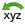
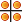

|
|
View Menu |
The View menu allows you to manage views of the Workspace and to control various aspects of the view of the structures, including stereo and 3D effects, clipping, and tiling. Some of these items are available on the View toolbar or the Saved Views toolbar.
Save View—Save the current view of the Workspace as a named view. Opens a dialog box, in which you can name the view.
Restore View—Restore a saved view of the Workspace. This submenu has Previous and Next items for restoring the previous and the next view in the play sequence of the saved views, and items for up to five views. These are the top views in the Views table of the Manage Views panel, and are listed by the row number, which is also the mnemonic for the view.
Manage Views—Open the Manage Views panel, in which you can select, save, restore, delete, import, export, play through, and record movies of views of the Workspace.
Reset— Resets the rotation, translation, and zoom of the Workspace to the default state, which has the screen axes along the coordinate axes of the Workspace structures. You can also do this with the Reset button on the View toolbar:
Fit to Workspace—Fit a group of atoms to the size of the Workspace. The submenu has items for fitting all atoms in the Workspace, the selected atoms, or the ligand to the size of the Workspace. See Fit to Workspace for more information.
Transform Mode—Select a transformation
mode, to which the normal mouse actions (left button, by default) apply, rather
than picking. The previous state is remembered when you exit the mode, either
from the menu, with the Esc key or by selecting
another action that involves picking. The submenu has four items:
None (Picking)—Default mode in which the mouse is
used for picking.
Rotation—Use the mouse for rotation.
Translation—Use the mouse for translation.
Zoom—Use the mouse for zooming.
Rotate—Rotate the structures in the Workspace. This submenu has items for rotating around the x (horizontal) axis and the y (vertical) axis by 90 degrees (also on the View toolbar), and items for rotating about all three axes by an increment that is set in the Preferences panel.
Translate—Translate the structure parallel to one of the axes. The submen has items for translating in either direction parallel to any of the three axes by an increment that is set in the Preferences panel.
Zoom In—Zoom in by a small increment.
Zoom Out—Zoom out by a small increment.
Align—Align the Workspace structure so that selected atoms lie on one of the Cartesian axes or planes, in the Align Atoms panel.
Move Clipping Planes—Adjust the clipping planes, where the view of the structure is truncated. This submenu has the following items:
The last three items use the fitting margin defined in the Preferences panel.
See Clipping Planes Window for more information.
Tile—Arrange the Workspace entries in a rectangular grid of "tiles". See Tiling Entries for more information. You can also do this with the Tile button on the View toolbar:
Stereo—Turn stereo viewing on or off. See the Stereo tab in the 3D tab of the Appearance panel for more information.
Perspective—Turn perspective on or off. See the the Perspective tab in the 3D tab of the Appearance panel for more information.
Enhanced Depth View—Enhance the perception of depth (with ambient spherical occlusion). This option is most useful for large structures.
Fog—Enable or disable fogging, and enhance depth cues. This submenu has the items Enhance Depth Cues, Settings, and Automatic, On, or Off for applying fogging. Automatic fogging turns fogging on when the molecule is larger than 40 atoms. See the Fog tab of the Appearance panel for more information. You can also do this with the Fog button on the View toolbar:
3D Options—Set options for stereo display, perspective, and fogging (depth cueing), in the 3D tab of the Appearance panel.
|